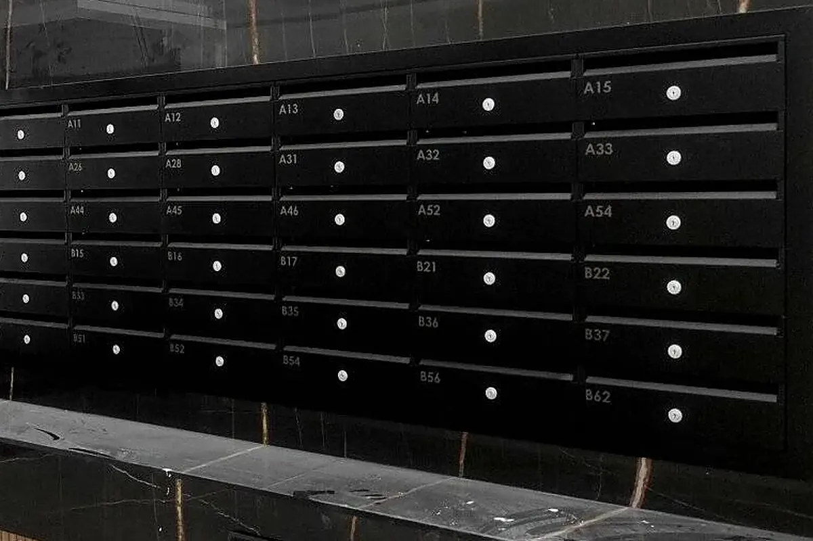

Gravure laser
Marque la surface sans encre et sans contact. Sur inox et aluminium, le marquage est permanent. Sur peinture, le contraste dépend de la couleur : certaines teintes se gravent bien, d’autres non.
Marquage de pièces métalliques à Legutio (Álava, Espagne), au Pays basque
Logos, numérotations, références et consignes directement sur la pièce, peinte ou en métal nu. Peinte et marquée dans la même commande, elle sort finie.

Tout dépend de ce qu’il y a dessous. Voici comment se comportent le laser et l’impression UV :
| Surface | Gravure laser | Impression UV |
|---|---|---|
| Inox non peint | Oui | Non, sauf vernis préalable |
| Aluminium non peint | Oui | Non, sauf vernis préalable |
| Pièce peinte ou laquée | Selon la couleur | Oui |
Vernir le métal pour pouvoir imprimer en UV lui fait perdre sa brillance.
Marque la surface sans encre et sans contact. Sur inox et aluminium, le marquage est permanent. Sur peinture, le contraste dépend de la couleur : certaines teintes se gravent bien, d’autres non.
Encre séchée instantanément par lumière ultraviolette, que l’on peut superposer en couches pour créer un relief. Elle demande une surface peinte ou laquée.
Un tampon en silicone prélève l’encre sur un cliché gravé et la dépose sur la pièce. Il épouse les surfaces courbes ou irrégulières et les petites pièces.
L’encre passe sur la pièce à travers un écran à mailles. Elle donne des aplats opaques et nets sur les surfaces planes.
Oui, mais le résultat dépend de la couleur : certaines teintes se gravent bien, d’autres non. Indiquez le RAL dans votre demande de devis.
Pas en brut : l’encre n’accroche pas. Il faudrait d’abord le vernir, ce qui fait perdre au métal sa brillance. Pour l’inox ou l’aluminium non peints, la solution est le laser.
La tampographie transfère l’encre avec un tampon en silicone et s’adapte aux surfaces courbes ou aux petites pièces. La sérigraphie fait passer l’encre à travers un écran à mailles et convient mieux aux surfaces planes.
Oui. Ajoutez le marquage à l’étape finition du devis : la pièce sort peinte et marquée.
 Thermolaquage de pièces et structures
Peinture poudre époxy, polyester ou époxy-polyester. Tout le nuancier RAL, lisse ou texturé, du mat au brillant.
Thermolaquage de pièces et structures
Peinture poudre époxy, polyester ou époxy-polyester. Tout le nuancier RAL, lisse ou texturé, du mat au brillant.
 Cataphorèse et système Marine C5-M
Primaire par immersion qui atteint chaque recoin, puis couche de finition en poudre. Pour le littoral et les milieux agressifs : classe C5-M.
Cataphorèse et système Marine C5-M
Primaire par immersion qui atteint chaque recoin, puis couche de finition en poudre. Pour le littoral et les milieux agressifs : classe C5-M.
 Thermolaquage de profilés aluminium
Profilés dans la couleur et la finition voulues, avec la même ligne et le même contrôle.
Thermolaquage de profilés aluminium
Profilés dans la couleur et la finition voulues, avec la même ligne et le même contrôle.
 Thermolaquage sur acier galvanisé
Une préparation spécifique pour que le zinc ne dégaze pas au four : système duplex zinc et peinture poudre.
Thermolaquage sur acier galvanisé
Une préparation spécifique pour que le zinc ne dégaze pas au four : système duplex zinc et peinture poudre.
Ferme et écrit, en moins de 24 heures ouvrées. Vous pouvez aussi nous appeler.